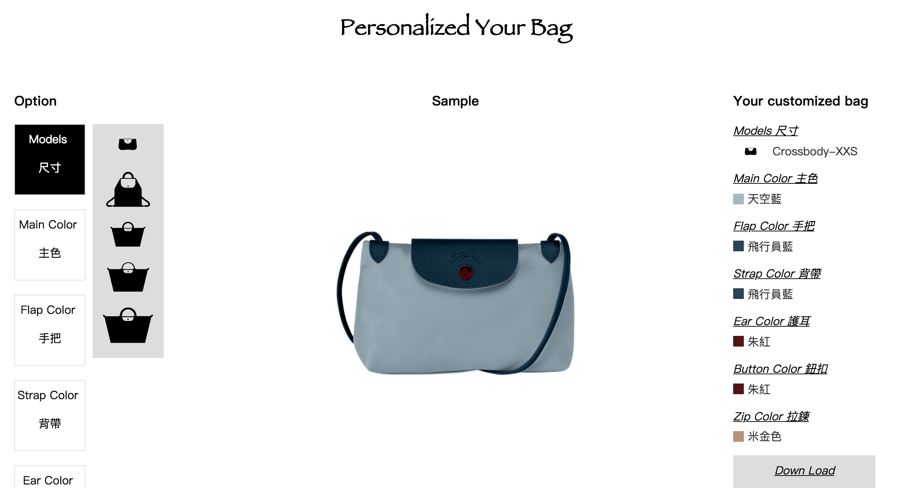
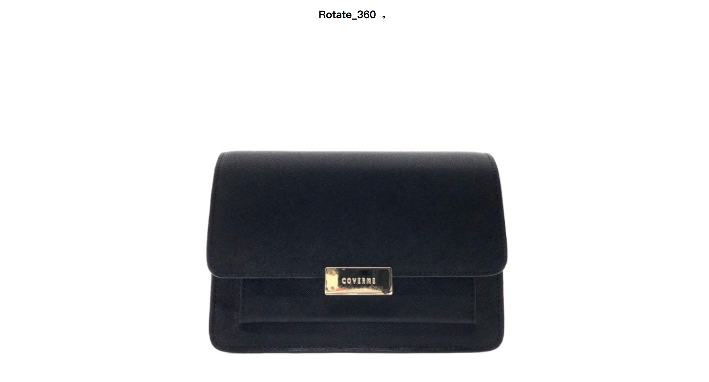
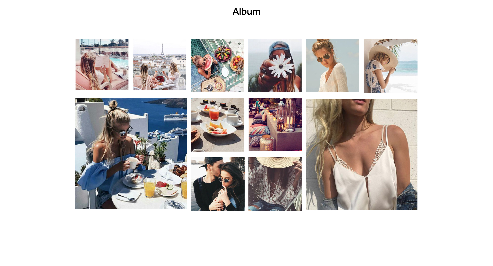
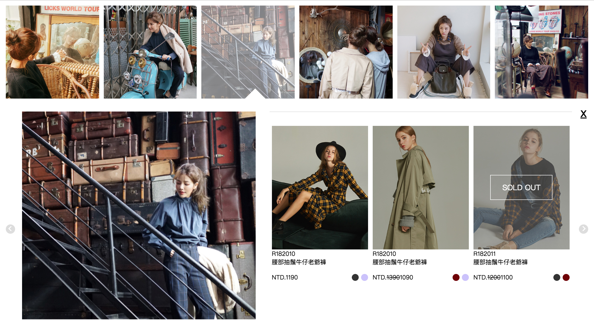
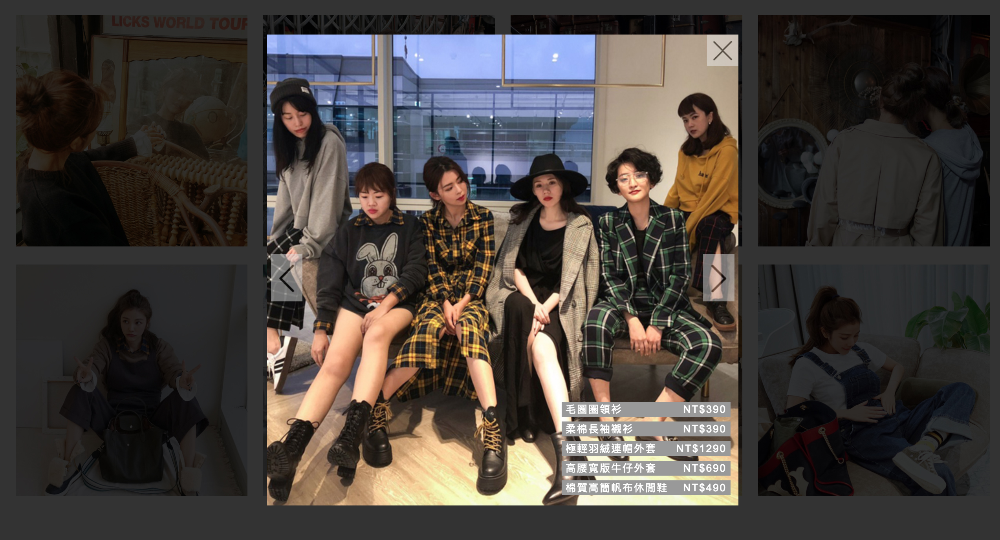
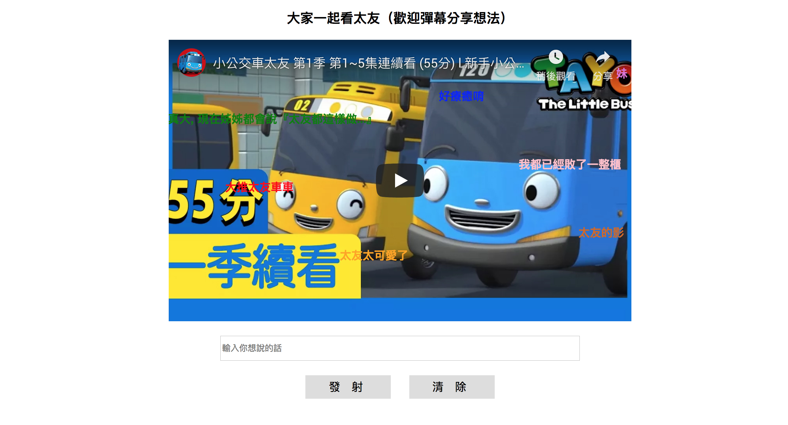
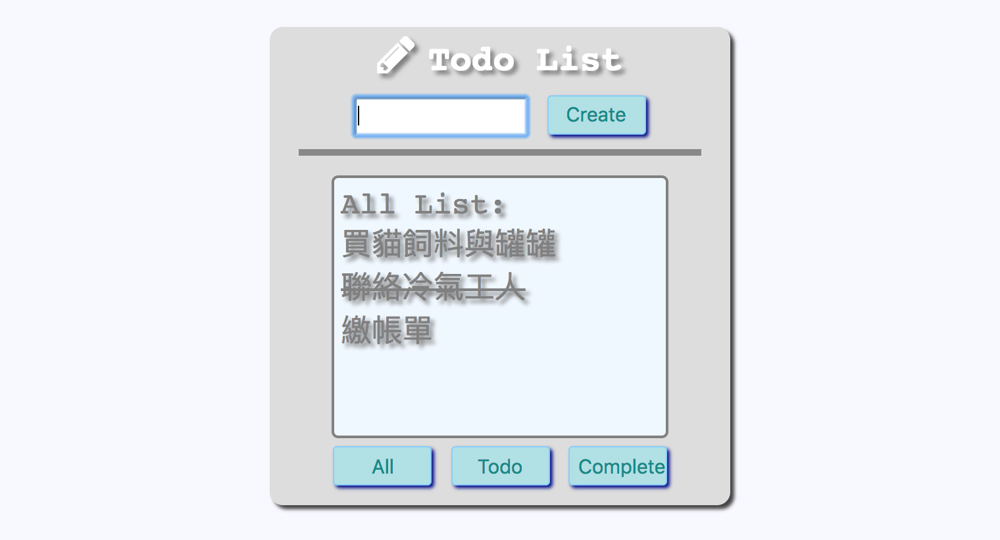
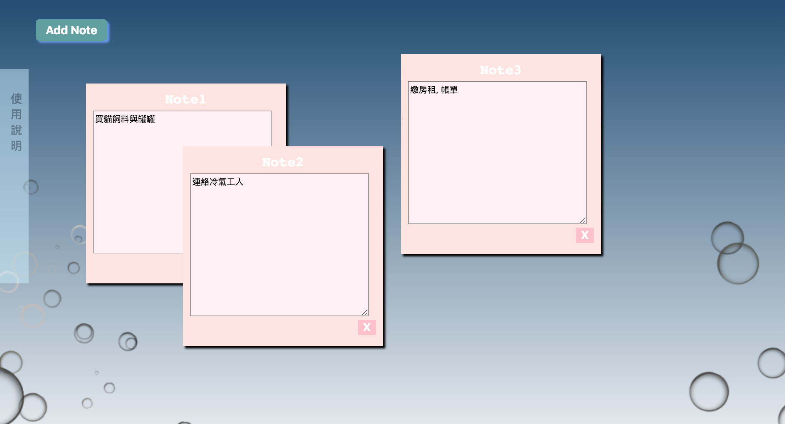
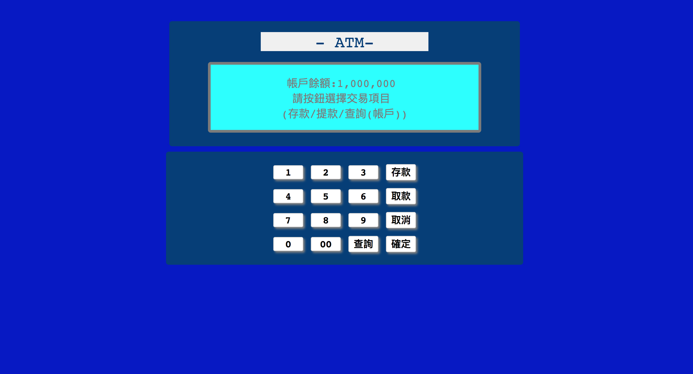
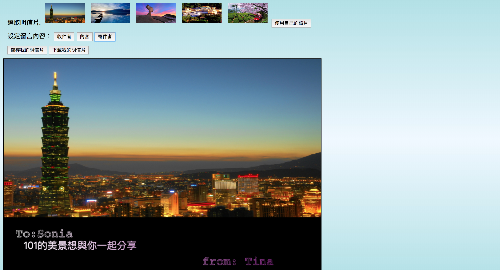

Bag
仿網站,使用HTML5的canvas功能，讓使用者可以將圖檔上色，製作屬於自己的包包。

CoverMe
仿spinzam網站, 使用HTML5的transform功能, 結合js的mousedown、mousemove、mouseup事件, 做出360度的視覺效果。

Album
利用css的flex的排版功能，搭配javascript的Math.random方法, 做出大小圖的組合相簿輪播。

Lure Community
依據jason格式的物件資料繪出html畫面, 並計算目前點擊位置, 產出對應的子選單, 點擊前後箭頭時, 亦可重繪出相對應的子選單資料。

Lative Style
仿做lative的style頁。

Danmu
模擬目前流行的影片彈幕功能, 以JQ撰寫彈幕功能, 並透過使用HTML5的iframe功能嵌入youtube影片, 讓使用者可以隨時輸入彈幕或清除畫面上的彈幕觀。

TodoList
仿TODOLIS,使用HTML5的localStorage功能，讓使用者可記錄自己的工作清單。

Note
仿電子便利貼功能，運用creatElement產生便利貼，並註冊mouse事件來移動便利貼位置。

ATM
註冊click事件於按鈕上，透過函式、if條件運算，將按鍵資料進行運算並回傳結果於螢幕上。

Postcard
使用HTML5的canvas功能製做明信片，使用者可將照片搭配文字做成自己的明信片。